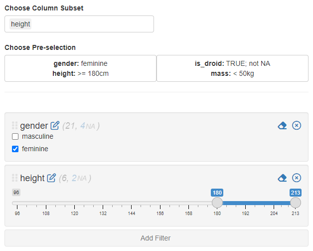

Here is a minimal example using IDEAFilter_ui() and
IDEAFilter() to explore a data set:
library(shiny)
library(IDEAFilter)
library(dplyr)
shinyApp(
ui = fluidPage(
titlePanel("Filter Data Example"),
fluidRow(
column(8, dataTableOutput("data_summary")),
column(4, IDEAFilter_ui("data_filter")))),
server = function(input, output, session) {
filtered_data <- IDEAFilter("data_filter", data = iris, verbose = FALSE)
output$data_summary <-
renderDataTable(filtered_data(),
options = list(scrollX = TRUE, pageLength = 5))
}
)The server side of the module returns the reactive
ShinyDataFilter_df object which includes the filtered data
frame and the code used to filter it as an attribute.
With the release of IDEAFilter() to replace the
deprecated shiny_data_filter(), a couple more arguments
have been introduced to enhance the functionality of the filter.
To explore these features we can run the following example application:
library(shiny)
library(IDEAFilter)
app <- system.file("examples", "starwars_app", package = "IDEAFilter")
runApp(app)In the application you can freely select a subset of columns to
include in the filter. The col_subset argument can be set
in development of an application or can be a reactive variable in
deployment. You should note these columns can still be set using
pre-selection and will still be applied to the filter. For instance, you
can see below that only height has been selected but
gender is still being applied.

The application comes with two choices to apply pre-selection:
NAs) and has a mass
less than 50 kgLooking at the second example is informative on how a developer can create their own pre-selections.
list(
is_droid = list(filter_na = TRUE, filter_fn = ~ isTRUE(.x)),
mass = list(filter_fn = ~ .x < 50))
)The argument preselection is a named list where the
names correspond to column names in the data set and the elements are
lists containing the elements filter_na and
filter_fn. The missing values (i.e. NAs) will be filtered
if filter_na is set to TRUE. The
filter_fn element can either be a formula or a function.
The filter will attempt to apply the function to the data set when
populating the initial values.